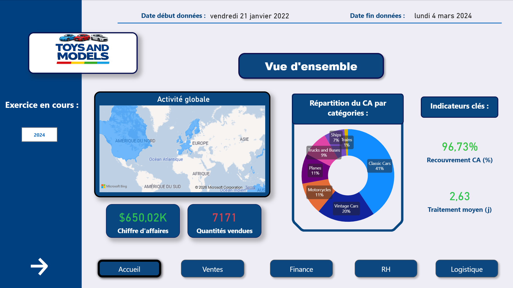

Toys and Models
Exploration SQL, création de vues pour le reporting, export vers Power BI et dashboard interactif.
Portfolio • Data Analyst
Fort d’une solide expérience analytique et d’une compréhension business approfondie, j’apporte une expertise métier immédiatement exploitable pour vos projets data, avec une montée en autonomie rapide.
Mon parcours et ce que j’apporte en entreprise.
Mon expérience dans le domaine de la finance et le budget m'a permis de développer une forte rigueur analytique qui se traduit par une compréhension des enjeux, un contrôle de la qualité des données, une interprétation claire des indicateurs et restitution professionnelle à des décideurs.
Avec ma reconversion dans la Data (Wild Code School), j’ai renforcé ma capacité à produire des livrables techniques : vues SQL orientées business, pipelines de transformation, analyse Python, dashboards Power BI, Data viz et autres.
Au-delà de la technique, c'est une véritable passion qui m'anime. La data est un univers que j’ai découvert avec grand intérêt. Je le comprends naturellement ce qui m’a permis une montée en compétence rapide. Cette affinité se traduit par un engagement constant : j'aborde chaque travail et chaque projet avec le même sérieux et la même curiosité.
Deux projets réalisés à la Wild Code School.

Exploration SQL, création de vues pour le reporting, export vers Power BI et dashboard interactif.

Pipeline de nettoyage de données, enrichissement avec API et recommandation via Nearest Neighbors sur une app Streamlit.
Une question, une opportunité, un échange ?
Dernière mise à jour : 2026